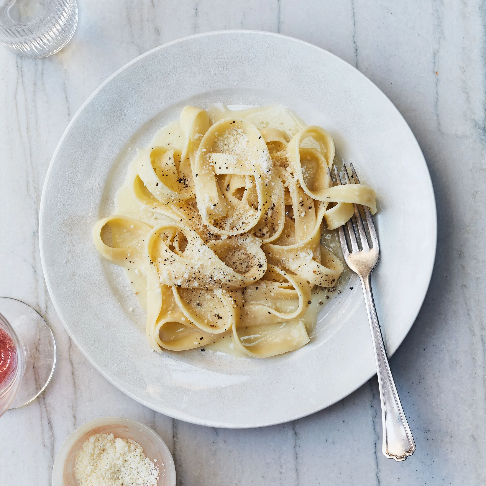

Alfredo

Fettuccine Alfredo
This is a classic fettuccine alfredo that does not use any cream. Instead, we create a velvety,
luxurious sauce by combining starchy pasta water, butter, and parmesan cheese to create a nice emulsion.
The result is a flavorful cream sauce that goes great with fettuccine or any wide bodied pasta noodle.
Ingredients
- 8oz dried fettuccine
- 1/2 to 3/4 cup pasta water
- 5-6 Tbsp unsalted, high-fat butter
- 75g grated parmesan
Steps
- Cook pasta in heavily salted water according to package instructions.
- Once pasta is cooked, transfer from water into saute pan along with any pasta water that comes with it.
- Add in another 1/2 cup of pasta water and toss.
- Add 5Tbsp utter and swirl with pasta to emulsify. Add in grated parm and stir to combine.
- Adjust consistency of sauce with extra pasta water, butter, or parmesan as necessary. Plate and serve
with additional grated parm and fresh cracked black pepper.